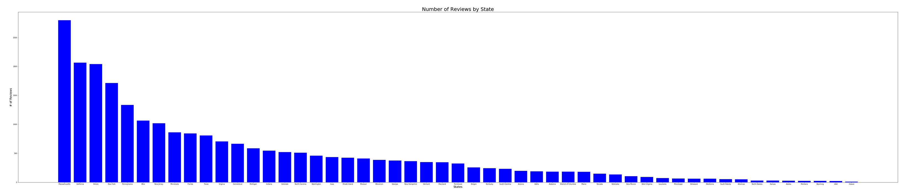

United States of Beer
Analysis of Beer Advocate Scrap Data
Our analysis primarily utilizes Machine Learning via SciKitLearn
and plotting with MatplotLib to analyze beer style, location by state, and users.
We decided to focus on state and style data because user demographic data
was limited to gender, which was self-restricting as a quick analysis of
user reviews lead to the discovery that out of
4807 reviews 0.42% were female,
90.01% were male, and 9.57% were listed as 'unspecified'.

States Population & Number of Reviews
As you can see above the number of beer reviews seems to be primarily determined by state population.
There are a couple outliers here, most notably, the state with the highest ratings, Massachusetts.
This is likely due to the fact that BeerAdvocate was founded in 1996 and originally based in Boston, Massachusetts.
Since they have also expanded to Denver, Colorado.